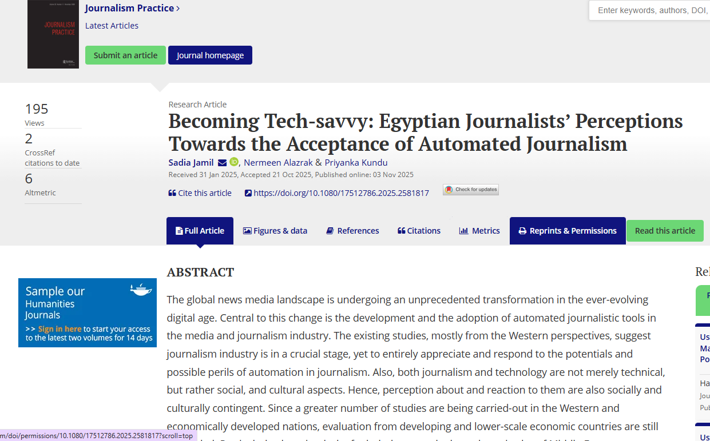

Platformed Election Campaigning: Facebook Affordances and Political Narratives in Bangladesh’s 2024 Election
Doctoral dissertation · University of Illinois Chicago
Advisor: Zizi Papacharissi


Political Communication × Digital Media & AI × Cultural Studies × Journalism
I examine how political actors use platform features to construct political narratives, and how ordinary users reinterpret and contest political messages through remix, humor, and participatory culture.
Doctoral dissertation · University of Illinois Chicago
Advisor: Zizi Papacharissi
With Dr. Do Own (Donna) Kim · Under review
I study how generative AI represents cultural practices and interprets contested political concepts, with attention to bias and differences across languages and cultural contexts.
Mukherjee, I., Williams, & Kundu, P.
Book chapter · Bloomsbury · Forthcoming in 2027
Kundu, P., & Knüpfer, C. (2026) · Research in progress
Supported by the DDC × TrygFonden Fellowship, University of Southern Denmark
I investigate how journalists respond to emerging technologies and how news media frame AI, its promises, and its failures. My work includes studies of newsroom adoption and comparative analyses of media narratives.
Jamil, S., Alazrak, N., & Kundu, P. (2025)
Journalism Practice
Read article ↗Rojecki, A., Kundu, P., & Alam, Z. · Research in progress
A comparison of how The New York Times and The Wall Street Journal frame AI failures, responsibility, and proposed remedies.